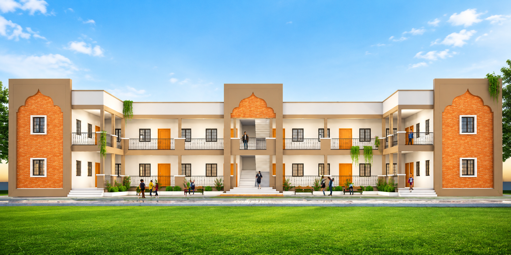

Run under Satara Zilla Parishad, Adarsh Vidyalaya has been a home for learning and growth for the children of Khandala and the surrounding villages.
PM SHRI Zilla Parishad Prathmik Aadarsh Kendra Shala, Khandala has served students from Nursery through the primary years, combining a values-based upbringing with modern teaching methods. As a Zilla Parishad school, admission is open and affordable for every family in the taluka, regardless of background.
Our teachers focus on building strong fundamentals in language, mathematics, and science in the early years, while also encouraging curiosity, discipline, and confidence through daily activities, sports, and cultural programs.

To provide every child with a safe, joyful, and disciplined learning environment where strong academic foundations are built alongside good character and civic values.
To be a model (Aadarsh) primary school within the Zilla Parishad system — one that other schools in the district look to for quality teaching and student outcomes.
Respect, honesty, and hard work, guided by the motto on the Zilla Parishad seal: Bahujan Hitay, Bahujan Sukhay — the welfare and happiness of the many.
Our school operates under the Education Department of Satara Zilla Parishad, following the state curriculum and government norms for infrastructure, mid-day meals, and student welfare schemes.
This means transparent admissions, no-cost or low-cost education, and access to all government scholarships and schemes available to primary school students in Maharashtra.
Years of Excellence
Alumni
Awards
Qualified Faculty Members